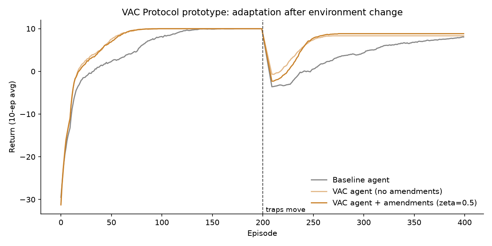

規則寫在 NFT 裡，程式照規則執行；持有者握有最終關機權。
An AI agent framework governed by an on-chain constitution.
A02：只有當 token #13 與憲法 Axiom #003（token #4）在同一個錢包時，系統才會運作。轉出 #13 即停止。
| # | 模組 | Token | 狀態 |
|---|---|---|---|
| 讀取中… | |||
7×7 格子世界，第 200 回合陷阱移位；30 個隨機種子平均。每次更新程式時由 GitHub Actions 自動重跑。

✅ 一套可公開驗證的原型：AI agent 的參數與開關由 Ethereum 上的 NFT 決定。
⚠️ 經預先登記的嚴謹測試：優勢主要來自「每步小成本」這個已知技巧，「痛覺」機制目前未顯示額外效益（完整結果）。
❌ 不是有意識的 AI；「痛覺」「意志」是變數名稱。
❌ 不是投資商品。